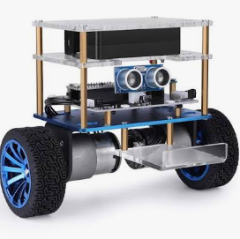
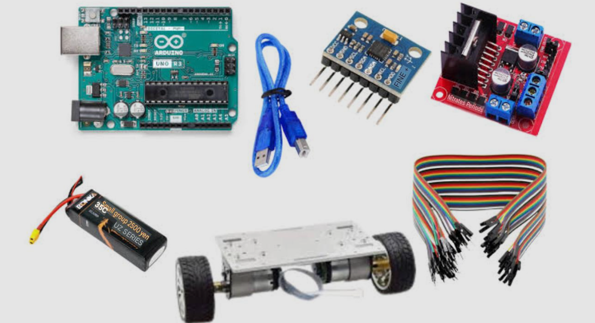
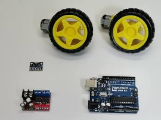
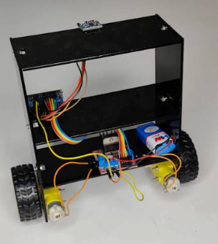

Self Balancing
Automatically corrects the robot's tilt using motor feedback.
VJAYA ROBOTICS PROJECT 03
ARDUINO PROJECTBuild a two-wheel robot that automatically maintains its upright position using an MPU6050 sensor, PID control and an L298N motor driver. Control its movement wirelessly using Bluetooth.
Explore ProjectPROJECT OVERVIEW
The Self-Balancing Robot is a two-wheel robotic system designed to balance itself in an upright position. It uses an MPU6050 accelerometer and gyroscope to measure its tilt and rotational movement.
An Arduino UNO processes the sensor readings and calculates the required motor correction using a PID-based controller. The L298N motor driver controls the two DC motors to help maintain balance.
An HC-05 Bluetooth module receives wireless movement commands from a compatible Bluetooth controller.




WHAT IT CAN DO
Automatically corrects the robot's tilt using motor feedback.
Measures acceleration and angular velocity.
Calculates motor correction to maintain balance.
Receives movement commands through HC-05.
Controls independent left and right motors.
Stops motor drive when the tilt exceeds the configured limit.
HARDWARE REQUIREMENTS
MOTOR CONNECTIONS
| L298N Pin | Arduino UNO Pin |
|---|---|
| ENA | D5 |
| IN1 | D7 |
| IN2 | D8 |
| ENB | D6 |
| IN3 | D9 |
| IN4 | D4 |
Connect the left and right motors to the corresponding L298N output terminals. Confirm the actual motor direction before attempting to balance.
SENSOR CONNECTIONS
| MPU6050 Pin | Arduino UNO Pin |
|---|---|
| VCC | Suitable module supply voltage |
| GND | GND |
| SDA | A4 |
| SCL | A5 |
WIRELESS CONTROL
| HC-05 Pin | Arduino UNO Connection |
|---|---|
| TXD | D10 (BT_RX) |
| RXD | D11 (BT_TX), through a voltage divider |
| GND | GND |
| VCC | According to HC-05 breakout specifications |
HOW IT WORKS
WIRELESS OPERATION
| Command | Function |
|---|---|
| A | Arm the robot |
| X | Disarm the robot |
| F | Forward movement target |
| B | Backward movement target |
| L | Left turn |
| R | Right turn |
| S | Stop movement command |
SOFTWARE REQUIREMENTS
Wire and SoftwareSerial are included with the standard Arduino AVR board package. The supplied project uses its own MPU6050 sensor implementation.
PROGRAMMING
Download the modular Self-Balancing Robot project files.
self_balancing_robot.ino
Download Code ↓ ⚙️balance_config.h
Download Code ↓ 📑balance_controller.h
Download Code ↓ 🧠balance_controller.cpp
Download Code ↓ 📑bluetooth_control.h
Download Code ↓ 📡bluetooth_control.cpp
Download Code ↓ 📑motor.h
Download Code ↓ ⚙️motor.cpp
Download Code ↓ 📑mpu6050.h
Download Code ↓ 📐mpu6050.cpp
Download Code ↓PROJECT DEMONSTRATION
Self-Balancing Robot Demonstration
Your project demonstration video will appear here.